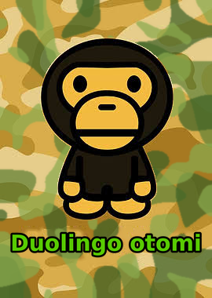
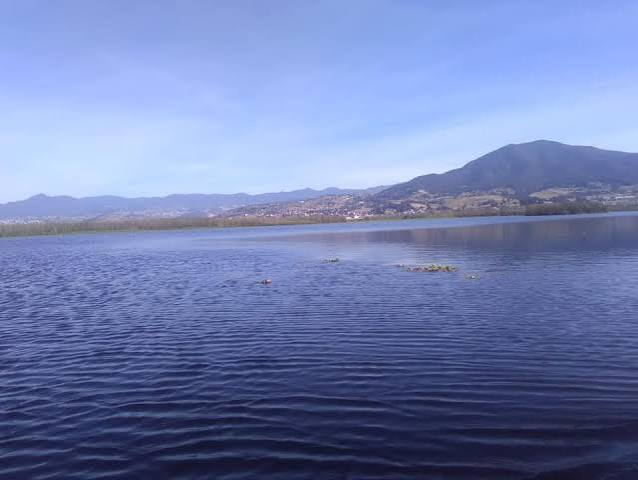
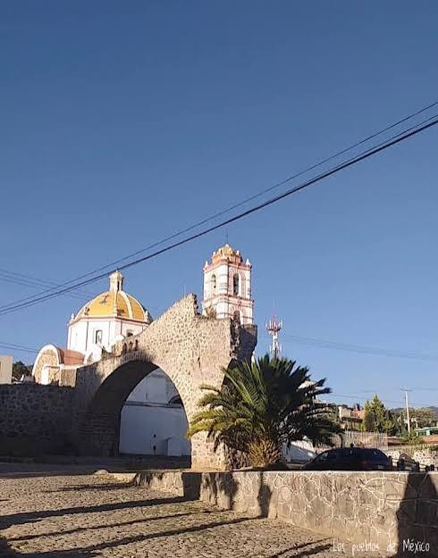
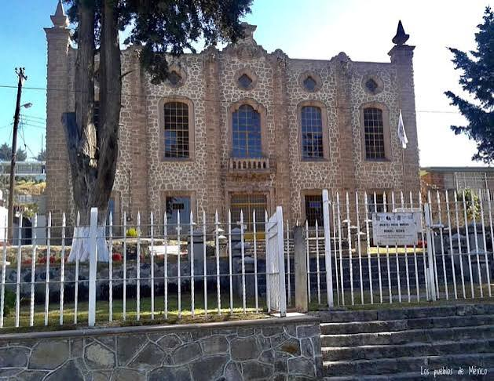
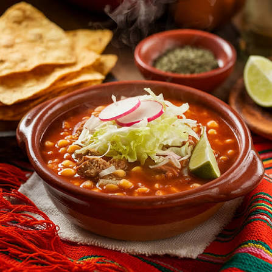
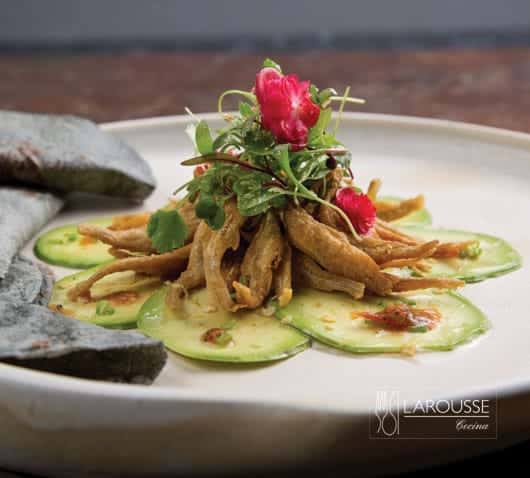
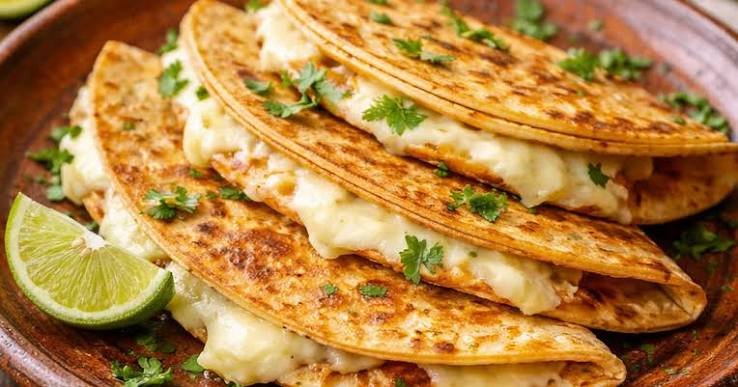
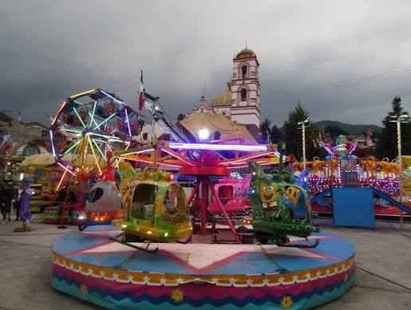
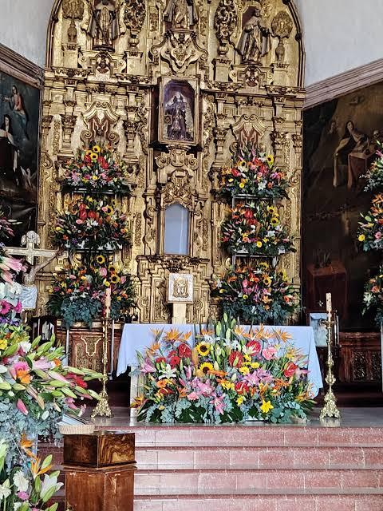
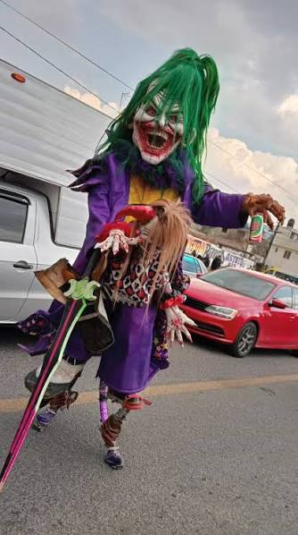

Este es el contenido principal de la pagina
Selecciona APRENDER en el menu para ver el contenido


La Laguna de San Nicolas Peralta es un humedal natural ubicado en la comunidad de Lerma

Es un templo dedicado a San Nicolas de Tolentino y forma parte de la historia religiosa de la comunidad

La Biblioteca Manuel Bernal contribuye a la lectura y la cultura de los habitantes

Platillo tradicional de algunas comunidades del Valle de Toluca, preparado con trigo y otros ingredientes

Los charales se preparan fritos o en distintos guisos y forman parte de la gastronomia de la region lacustre

Antojitos elaborados con tortillas de maiz que pueden llevar queso, hongos o flor de calabaza

Una celebracion con actividades religiosas, música y convivencia entre los habitantes

Las familias participan en actividades religiosas que mantienen vivas las creencias de la comunidad

Una tradicion relacionada con el carnaval, reconocida por su música y sus coloridos disfraces